ਹਾਇਪਰਟੈਂਸ਼ਨ ਦੇ ਰੋਗੀਆਂ ਦਾ ਪਤਾ ਲਗਾਉਣ ਲਈ ਚਿਕਿਤਸਕਾਂ ਲਈ ਤੇਜ਼, ਮੁਫ਼ਤ ਐਪ।
ਸਿੰਪਲ ਕੀ ਹੈ?
ਕਈ ਸਥਾਨਾਂ ‘ਤੇ, ਬੱਲਡ ਪ੍ਰੈਸ਼ਰ ਦੇ ਮਾਪ ਦੇ ਰੋਗੀ ਦੇ ਰਿਕਾਰਡ ਲੰਬੇ ਸਮੇਂ ਤੱਕ ਸੰਭਾਲ ਲਈ ਗੈਰ-ਉਪਯੋਗੀ ਹੁੰਦੇ ਹਨ। ਇੱਕ ਆਸਾਨ, ਕੇਂਦਰੀਕ੍ਰਿਤ ਟ੍ਰੈਕਿੰਗ ਸਿਸਟਮ, ਆਸਾਨ ਅਤੇ ਪ੍ਰਭਾਵੀ ਉਪਚਾਰ ਪ੍ਰੋਟੋਕਾਲ ਨਾਲ ਜੁੜੇ ਚਿਕਿਤਸਕਾਂ ਦੀ ਰੋਗੀਆਂ ਦਾ ਜੀਵਨ ਬਚਾਉਣ ਵਿੱਚ ਮਦਦ ਕਰੇਗਾ।
ਇਹ ਪ੍ਰੋਜੈਕਟ ਕਿੱਥੇ ਸ਼ੁਰੂ ਹੋਇਆ?
ਸਿੰਪਲ Resolve to Save Lives, ਦੁਆਰਾ ਸਮੱਰਥਿਤ ਗ਼ੈਰ-ਲਾਭ ,Vital Strategies ਦੀ ਇੱਕ ਪਹਿਲ ਹੈ, ਜਿਸਦਾ ਟੀਚਾ ਘੱਟ ਅਤੇ ਦਰਮਿਆਨੀ ਆਮਦਨ ਵਾਲੇ ਦੇਸ਼ਾਂ ਵਿੱਚ ਦਿਲ ਦੇ ਰੋਗ ਅਤੇ ਸਟ੍ਰੋਕ ਤੋਂ ਮਰਨ ਵਾਲੇ ਅਨੇਕਾਂ ਲੋਕਾਂ ਦੀ ਸੰਖਿਆ ਘੱਟ ਕਰਨਾ ਹੈ। ਮੁੱਖ ਟੀਚਾ ਹਾਇਪਰਟੈਂਸ਼ਨ ਨਾਲ ਪ੍ਰਭਾਵਿਤ ਉਹਨਾਂ ਲੋਕਾਂ ਦੇ ਪ੍ਰਤੀਸ਼ਤ ਨੂੰ ਕਾਫੀ ਹੱਦ ਤੱਕ ਵਧਾਉਣਾ ਹੈ, ਜੋ ਆਪਣਾ ਬੱਲਡ ਪ੍ਰੈਸ਼ਰ ਮਾਪਦੇ ਹਨ ਅਤੇ ਨਿਯੰਰਿਤ ਰੱਖਦੇ ਹਨ। ਹਾਇਪਰਟੈਸ਼ਨ ਦਾ ਪਤਾ ਲਗਾਉਣ ਲਈ ਪ੍ਰਸੰਗਿਕ ਡਿਜ਼ੀਟਲ ਪਲੇਟਫਾਰਮ, ਸਿੰਪਲ ਜਰੂਰੀ ਹੈ, ਇਹ ਕਾਰਵਾਈਯੋਗ ਰਿਪੋਰਟ ਸਕ੍ਰਿਅ ਕਰਦਾ ਹੈ ਅਤੇ ਰੋਗੀ ਦੇਖਭਾਲ ਨੂੰ ਸੁਧਾਰਦਾ ਹੈ।
ਸਾਡੇ ਸਿਧਾਂਤ ਕੀ ਹਨ?
ਸਾਡੇ ਕੋਲ ਇੱਕ ਅਤਿ ਮਹੱਤਵਪੂਰਨ ਟੀਚਾ: ਜਾਨਾਂ ਬਚਾਉਣਾ ਹੈ। ਇਹ ਪ੍ਰੋਜੈਕਟ ਹਮੇਸ਼ਾ ਮੁਕਤ ਸਰੋਤ (MIT ਲਾਇਸੈਂਸ) ਮੁਫ਼ਤ ਹੋਵੇਗਾ ਅਤੇ ਹਰੇਕ ਦੇ ਯੋਗਦਾਨ ਲਈ ਖੁੱਲ੍ਹਿਆ ਰਹੇਗਾ। ਅਸੀਂ ਡਿਜ਼ੀਟਲ ਵਿਕਾਸ ਲਈ ਸਿਧਾਂਤਾਂ ਦੀ ਤਸਦੀਕ ਕਰਦੇ ਹਾਂ। ਅਸੀਂ ਡਿਜ਼ੀਟਲ ਸਿਧਾਤਾਂ ਦੀਆਂ ਧਾਰਨਾਵਾਂ ਇੱਕਠੀਆਂ ਕਰਨ ਦੀ ਮੰਗ ਕਰਾਂਗੇ, ਜੋ ਸਾਡੀ ਕਾਰਜ ਸੰਸਕ੍ਰਿਤੀ ਵਿੱਚ ਅਤੇ ਪਾਲਸੀਆਂ ਵਿੱਚ ਅਤੇ ਅੰਤਰਰਾਸ਼ਟਰੀ ਵਿਕਾਸ ਗਤੀਵਿਧੀਆਂ ਵਿੱਚ ਮਾਰਗਦਰਸ਼ਨ ਕਰਨ ਵਾਲੀਆਂ ਪ੍ਰਕਿਰਿਆਵਾਂ ਵਿੱਚ ਪ੍ਰਦਰਸ਼ਿਤ ਕੀਤੇ ਗਏ ਹਨ।
ਕੀ ਸਿੰਪਲ ਸੱਚਮੁੱਚ ਮੁਫ਼ਤ ਹੈ?
ਸਿੰਪਲ ਵਰਤਣ ਲਈ ਬਿਲਕੁਲ ਮੁਫ਼ਤ ਹੈ।
ਕਿਸੇ ਵੀ ਤਰ੍ਹਾਂ ਕੋਡ ਵਰਤੋਂ।
ਇਸ ‘ਤੇ ਕੋਈ ਖਰਚ ਨਹੀਂ ਹੁੰਦਾ
ਇਸ ਪ੍ਰੋਜੈਕਟ ਦਾ ਸਮੱਰਥਨ Resolve to Save Lives, ਗ਼ੈਰ-ਲਾਭ ਵਾਲੀ Vital Strategies ਦੀ ਇੱਕ ਪਹਿਲ ਦੁਆਰਾ ਸਮੱਰਥਿਤ ਹੈ, ਜੋ ਸਾਨੂੰ ਬਿਨਾਂ ਕੋਈ ਸਟ੍ਰਿੰਗ ਨੱਥੀ ਕੀਤੇ ਮੁਫ਼ਤ ਵਿੱਚ ਇਹ ਸਾਫਟਵੇਅਰ ਦੇਣ ਦੇ ਯੋਗ ਬਣਾਉਂਦੀ ਹੈ।
ਸਿੰਪਲ ਕਿਸ ਨਾਲ ਬਣਿਆ ਹੈ?
ਐਂਡ੍ਰੋਇਡ ਐਪ ਕੋਟਲਿਨ ਵਿੱਚ ਲਿਖੀ ਗਈ ਹੈ। API Ruby on Rails ਵਿੱਚ ਲਿਖੀ ਗਈ ਹੈ। ਕਲੀਨਿਕਲ ਡਾਟਾ FHIR ਅਨੁਕੂਲ ਹੈ। ਪੁੱਛਣ ਲਈ ਧੰਨਵਾਦ, ਉਤਸ਼ਾਹੀ ਦੋਸਤ।!
ਕੀ ਸਿੰਪਲ ਮੁਕਤ ਸਰੋਤ ਕਮਿਊਨਿਟੀ ਸ਼ੁਰੂ ਕਰ ਰਿਹਾ ਹੈ?
ਅਸੀਂ ਇੱਕ ਮੁਕਤ ਸਰੋਤ ਕਮਿਊਨਿਟੀ ਸਥਾਪਿਤ ਕਰਨ ਬਾਰੇ ਸੋਚ ਰਹੇ ਹਾਂ, ਜਿਸ ਵਿੱਚ ਡਿਜ਼ਾਇਨਰ, ਡਵੈਲਪਰ, ਇੰਪਲੀਮੈਂਟਰ, ਸਿਹਤ ਸੰਭਾਲ ਕਾਰਜਕਰਤਾ ਅਤੇ ਰੋਗੀ ਸ਼ਾਮਿਲ ਹਨ। ਇਸ ਸਾਲ ਹੋਰ ਜਾਣਕਾਰੀ ਆਵੇਗੀ। ਉਦੋਂ ਤੱਕ, GitHub ਯੋਗਦਾਨਾਂ ਲਈ ਕੇਂਦਰ ਹੈ।
ਧੰਨਵਾਦ
ਇਹ ਪ੍ਰੋਜੈਕਟ Resolve to Save Lives, ਭਾਰਤ ਸਰਕਾਰ, ਪੰਜਾਬ ਸਰਕਾਰ ਅਤੇ ਅਨੇਕਾਂ ਚਿਕਿਤਸਾ ਕਾਮਿਆਂ, ਰੋਗੀਆਂ ਅਤੇ ਸਾਥੀਆਂ ਦੀ ਸਰਵੋਤਮ ਸਲਾਹ ਅਤੇ ਭਾਗੀਦਾਰੀ ‘ਤੇ ਨਿਰਭਰ ਹੈ, ਜੋ ਵਿਸ਼ਵ ਭਰ ਵਿੱਚ ਹਾਇਪਰਟੈਂਸ਼ਨ ਦੇ ਕੰਟਰੋਲ ਸੁਧਾਰਨ ਲਈ ਰੋਜ਼ਾਨਾ ਸਖ਼ਤ ਮਿਹਨਤ ਕਰਦੇ ਹਨ।
 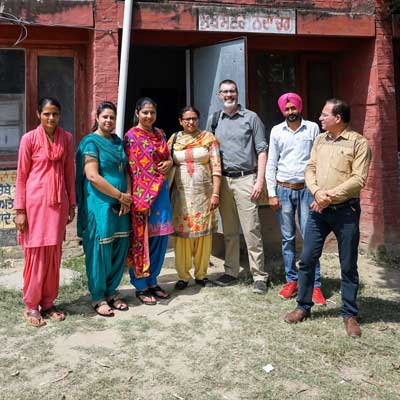
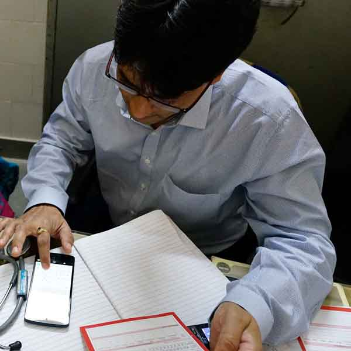
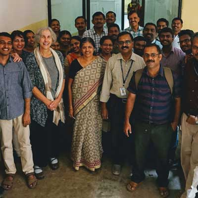
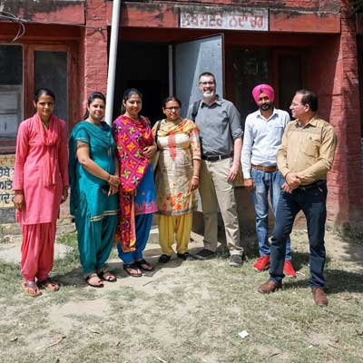
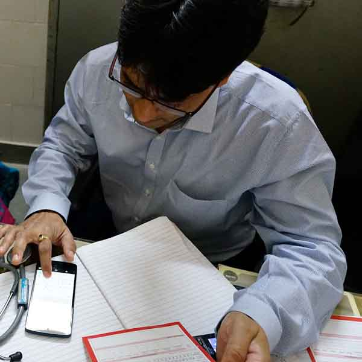
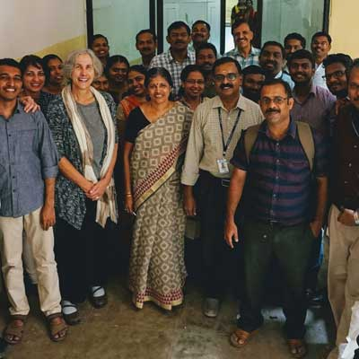

 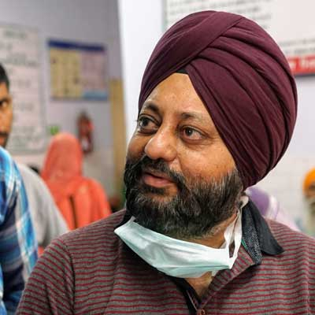
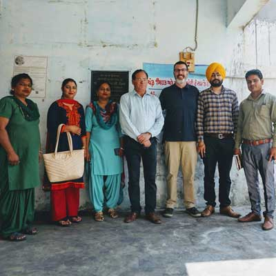
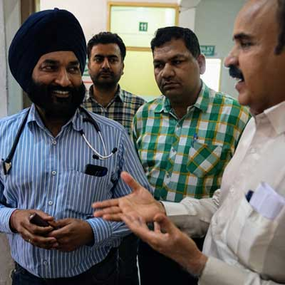
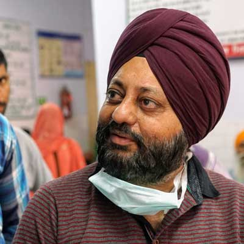
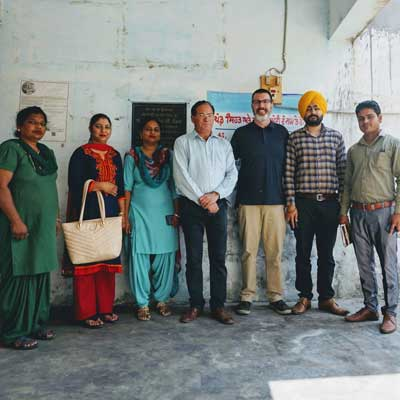
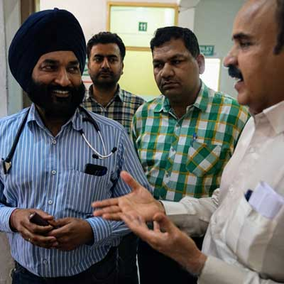